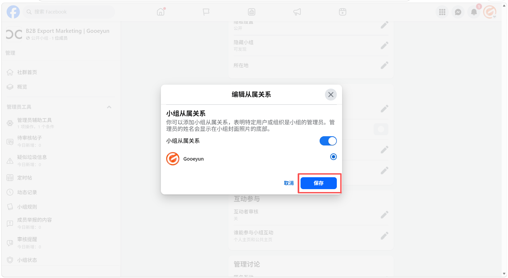
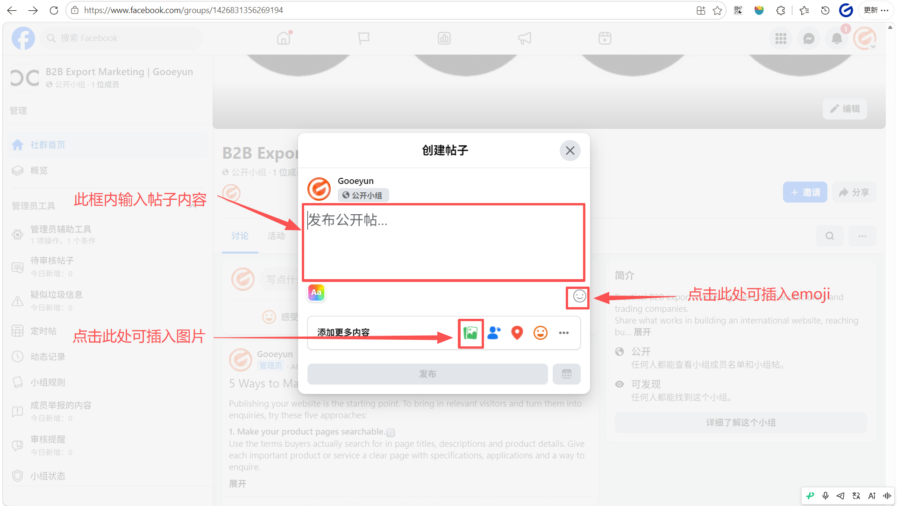

关联小组与公共主页
以公共主页身份进入小组：确保您当前切换到了要关联的公共主页身份。
在左侧的 管理工具 菜单中，向下滚动并点击 “小组设置”

点击“小组从属关系”

点击“切换开关”，将小组从属关系状态切换为开启

选择您想要展示的 “公共主页”，然后点击“保存”

保存后显示公共主页名字则代表添加成功

修改小组的 URL 链接
点击“网址” 旁边的铅笔图标

在文本框中输入内容后，点击保存
 设置小组网址的建议
- 使用英文和数字：URL 只能包含英文字母和数字。如果小组名称是中文，您必须将其翻译或转写为英文。
- 保持简洁易记：一个短的 URL 更方便您在公共主页贴文、业务邮件或 WhatsApp 中分享。
- 包含关键词：建议使用“品牌名+产品词”或“行业词+Sourcing”的形式。
- 示例：如果小组名是“High-Quality LED Lighting Wholesale”，网址可以设为
设置小组网址的建议
- 使用英文和数字：URL 只能包含英文字母和数字。如果小组名称是中文，您必须将其翻译或转写为英文。
- 保持简洁易记：一个短的 URL 更方便您在公共主页贴文、业务邮件或 WhatsApp 中分享。
- 包含关键词：建议使用“品牌名+产品词”或“行业词+Sourcing”的形式。
- 示例：如果小组名是“High-Quality LED Lighting Wholesale”，网址可以设为 facebook.com/groups/LEDLightingWholesale 或 facebook.com/groups/GooeyunSourcing。
- 唯一性：如果该网址已被其他小组占用，您需要尝试添加数字或微调词汇。
操作注意
- 一旦您的小组人数超过 5,000 人，您将无法再次修改该网址。
- 修改后，旧的系统默认网址（带有一串长数字的那个）仍然有效，但新的自定义网址看起来会更专业。
当URL成功显现刚刚填入的文字时代表修改成功

撰写欢迎贴
打开您创建的小组页面，点击页面顶部的“写点什么...框”。

撰写欢迎贴内容
- 在框内输入帖子内容，emoji表情
- 点击下方的 图片/视频 图标，配上一张工厂团队的合影或生产线的高清照片，增加真实感。

欢迎贴参考内容： Headline: Welcome to the [您的行业/产品关键词] Global Sourcing & Tech Hub!
Body:
Hi everyone! We are thrilled to have you here. This group is managed by [您的公共主页名称], a professional factory based in China specializing in [您的主营产品].
Our goal is to build a high-quality community for wholesalers, distributors, and sourcing agents to share industry insights and get direct factory support.
What you can expect here:
 Daily industry news & market trends.
Daily industry news & market trends.
Direct technical support from our engineering team.
Exclusive wholesale price lists & new product launches.
Group Rules:
 No Spam: Please do not post unrelated advertisements or repetitive links.
No Spam: Please do not post unrelated advertisements or repetitive links.
 Be Professional: Keep discussions focused on business and technology.
Be Professional: Keep discussions focused on business and technology.
Action Call:
We’d love to know more about you! Please introduce your business in the comments below:
- What is your company name?
- Which products are you currently sourcing?
Let’s grow together! 
点击“发布”

点击贴文右上角的 三个点 (...) 图标。

在下拉菜单中选择 标为精选
这条贴文就会始终显示在小组顶部的“精选”板块，确保每位新成员进群都能第一时间看到。